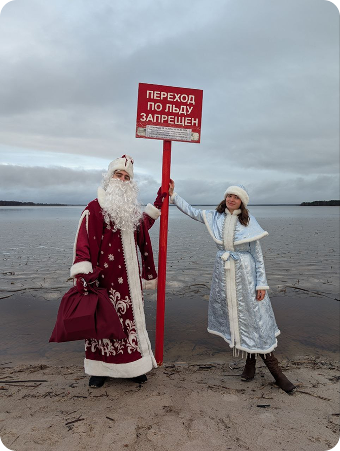
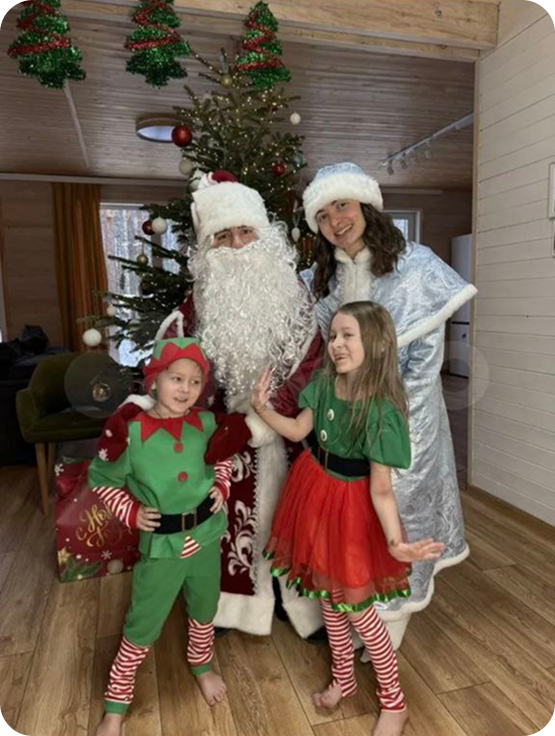
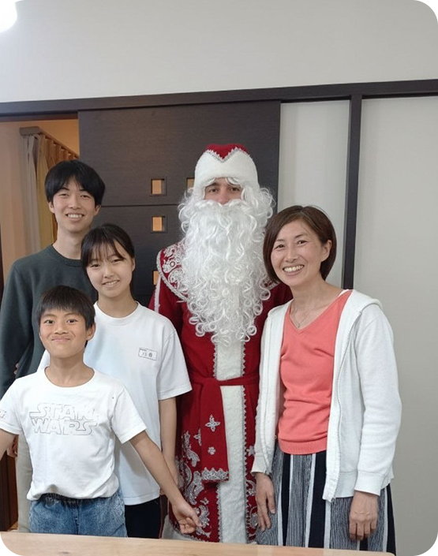

С чего начать: первые
шаги перед сезоном
Эта статья для тех кто хочет попробовать себя в роли Деда Мороза и Снегурочки и не знает, с чего начать. Вы узнаете, как подготовиться к выездам на дом, организовать процесс и избежать типичных ошибок. Пошаговый подход поможет вам уверенно войти в сезон и подарить детям настоящее новогоднее чудо
1. Кому подходит и когда пригодится
Работа Деда Мороза и Снегурочки на дому подойдет активным и коммуникабельным людям, которые любят детей и атмосферу праздника. Это отличный вариант подработки в предновогодний период.
Пригодится, если вы хотите:
- Порадовать детей и создать сказку
- Получить дополнительный доход в сезон
- Раскрыть творческие способности
- Найти интересное дело на короткий срок


2. Основные шаги
- Соберите и проверьте костюмы
- Подготовьте сценарии и реплики
- Подберите реквизит и подарки
- Настройте каналы поиска заказов
- Проведите пробный выезд
3. На что обратить внимание
- Костюмы чистые и опрятные
- Голос-самое важное
- Сценарий адаптируйте под возраст
- Имейте запасной план
- Создавайте атмосферу
4. Частые ошибки
- Опоздания- закладывайте запас времени
- Слишком длинный текст
- Нечистый костюм
- Нет контакта с ребенком
- Отсутствие плана
- Игнорирование деталей заказа
5. Вывод
Успешный выезд - это подготовка, внимание к деталям и искренняя вовлеченность.
Начните с простых шагов, постоянно улучшайте навыки и получайте удовольствие от каждого поздравления!
